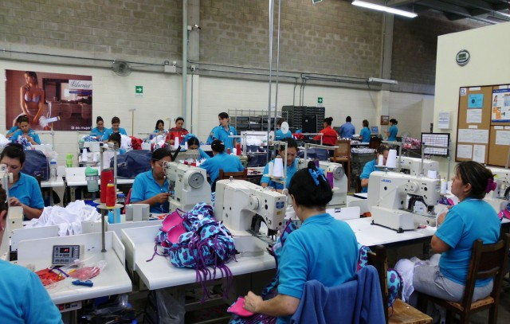

Quienes Somos?
Somos una Empresa Nariñense de ascendente trayectoria en el mercado a través de la comercialización y reparación de Maquinaria, partes e insumos para la Confección, calzado, Marroquinería y Artesanías en Fique.
El crecimiento de Artecoser ha sido continuo a lo largo de nuestra historia, gracias a la estable estructura con que contamos y el servicio que siempre nos ha caracterizado manejando para ello los mejores precios y marcas.
Misión
En Artecoser estamos comprometidos en el crecimiento y desarrollo de la Industria de la Confección, ofreciendo productos y servicios de calidad, todo esto lográndose con personal capacitado y de amplia experiencia. Para que así todos nuestros exclusivos clientes al adquirir productos y servicios en nuestra Empresa estén confiados que han tenido una acertada decisión.
Visión
En artecoser estamos convencidos de que la capacitación y Desarrollo constante es nuestra mejor herramienta para ser imprescindibles en el crecimiento de todos nuestros clientes, para nosotros es de gran importancia ser parte de la superación de grandes y pequeños talleres de Confección, Calzado y Marroquinería y Artesanías en fique.
Calle 15 No.22B-15 Via san Andresito-Pasto
Tel:7298272 Cel:317 776 1315-315 780 6089
Email:artecoser78@hotmail.es